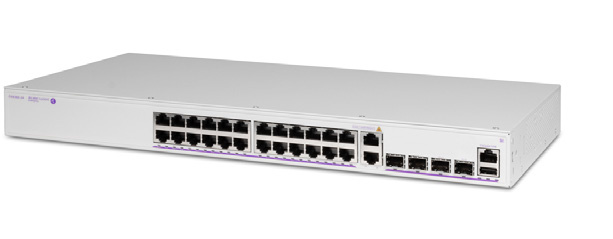

bp-os6360-datasheet

R（触发场景）
- 企业边缘/教室与园区工作组接入，比 2360 高一档、比 6370 便宜的选型
- 46x1G + 2x1G/2.5G + 760W 预算的低成本 Wi-Fi 6/7 AP 供电方案（P48X/PH48）
- OS6360-SW-PERF 许可分期：先 1G 后 10G
- ISSU/Split VC 保护等分支机构高可用设计
I（核心理念）
OS6360 是"企业价值接入"：branch/campus workgroup/enterprise value access（原文p15 ），AOS + WebView 2.0 + Lightning Config 开箱即配 + NDcPP (EAL1) 认证（原文p16 ）。层级：企业接入层入门档，上承 6370（多千兆高密）/6560（校园多千兆），下接 SMB 线 2360。
A1（与相邻系列选型差异）
- vs OS2360：同为 VC 8 台，但 6360 规模到 416 口、有 NDcPP EAL1/多样化 AOS 镜像/BYOD CoA/ISSU、PH 型可许可升 10G（2360 无此路径）；CPU 换 ARM。
- vs OS6370：6370 Z 型多口 2.5G + 2x95W + Secure Boot（Wi-Fi 7 时代）； 6360 只有 P48X/PH48 的 2 口 1G/2.5G bt 95W——过渡期少量多千兆选 6360，全 2.5G 楼层选 6370。
- vs OS6560：6560 有 6x10G 上联 + 20G 堆叠 + 全口 MACsec；6360 上联仅 2x10G（X 型）。
A2（规格细节速查表）
机型矩阵（原文p17 表 / 原文p20 商用型号）： | 型号 | 用户口 | 上联 | PoE 预算 | 风扇 | |---|---|---|---|---| | OS6360-10/P10 | 8（P 型 PoE+） | 2 RJ45 + 2 SFP（1G） | —/120W | Fan-less | | OS6360-24/P24 | 24（P 型 PoE+） | 2 combo 1G + 2 SFP+ 1G/10G/VFL | —/180W | Fan-less | | OS6360-48/P48 | 48（P 型 PoE+） | 2 combo 1G + 2 SFP+ | —/350W | 1 变速 | | OS6360-PH24 | 24 PoE+ | 2 combo 1G（SW-PERF 升 10G）+ 2 SFP+ | 380W | 1 | | OS6360-PH48 | 46 PoE+ + 2x1G/2.5G HPoE+ 95W bt | 2 combo 1G + 2 SFP+ | 760W | 1 | | OS6360-P24X | 24 PoE+ | 2 combo 1G/10G RJ45/SFP+ + 2 SFP+ | 380W | 1 | | OS6360-P48X | 46 PoE+ + 2x1G/2.5G HPoE+ 95W bt | 2 combo 1G/10G + 2 SFP+ | 760W | 1 |
- （*：PH24/PH48 的 RJ45/SFP combo 口用 OS6360-SW-PERF 许可升 10G，原文p17 注；P48X/PH48 多千兆口符合 802.3bt 95W + 802.3bz 2.5GE，原文p17 。
- ）上联与堆叠：2x10GE VFL 容量 40 Gb/s（原文p18 ）；VC 8 台/416 口（原文p16 ）；VC 1+N 冗余管理器 + ISSU + Split VC 自动恢复（原文p21 ）。
- 交换容量与包转发（原文p18 /原文p19 ）：基础型 24/92/140 Gb/s（17.9/68.5/104.2 Mpps）；PH/X 型 128~182 Gb/s（68.5~135.4 Mpps，SW-PERF 许可后最高 95.3~217 Mpps，原文p19 注 *）。
- 电源体系：单一内置电源、Backup N/A（原文p18 ）；PoE 满载 145W（P10）/222W（P24）/484W（P48）/446W（PH24/P24X）/879W（P48X/PH48）（原文p18 /原文p19 ）。
- Layer 特性：静态路由 IPv4/IPv6（256 条 IPv4 + 32 条 IPv6、32 IPv4 + 4 IPv6 接口，原文p22 ）；16k MAC、4k VLAN、9216B 巨帧、<4µs；无动态路由/SPB/VXLAN/MPLS/MACsec；AirGroup、BYOD（UPAM/ClearPass CoA 联动，原文p21 ）。
- 硬件平台：800MHz ARM v7、1GB RAM、1GB flash、1.5MB 包缓冲（原文p18 ）。
- 功耗/环境：待机 13~60W；0~45°C；存储 -40~85°C；MTBF 789k~2595k 小时（原文p18 /原文p19 ）。
- 规格红线：无备份电源；95W bt 口仅 P48X/PH48 各 2 口；10G combo 仅 X 型原生、PH 型需许可。
E（适用场景）
- 教室/园区工作组、中小企业与分支办公室、企业边缘（原文p15 部署建议）
- 预算有限但要 2 口 95W bt AP 供电的低成本入口：P48X/PH48（760W）
- 分期建设：先 P24X/P48X 1G 跑着，PH 型后续加 SW-PERF 升 10G（C9 许可路线）
- 要政府级认证背书的接入层：NDcPP EAL1 + 安全镜像（原文p16 ）
B（限制与坑）
- Backup power 全型号 N/A——电源冗余上 6560/6860（原文p18 ）
- 95W 口只有 2 个（P48X/PH48）——满层 Wi-Fi 7 AP 供电要上 6370-Z/6560-Z（对照 C2）
- SW-PERF 许可只作用于 PH24/PH48 的 2 个 combo 口，P 系列基础型不能升 10G（原文p20 ："allowing the 2xRJ45/SFP combo ports of the OS6360-PH24/PH48 only"）
- 静态路由 256 条 IPv4——大路由表场景不适用（原文p22 ）
- 8 口型 10/P10 无 VFL/堆叠参与能力（2x10GE VFL capacity: N/A，原文p18 ）
来源：bp-omniswitch-datasheets DOC 3（p15-23，DID20121401EN March 2026）；verified.md C2/C9/P4/P5/X15/F1/F3